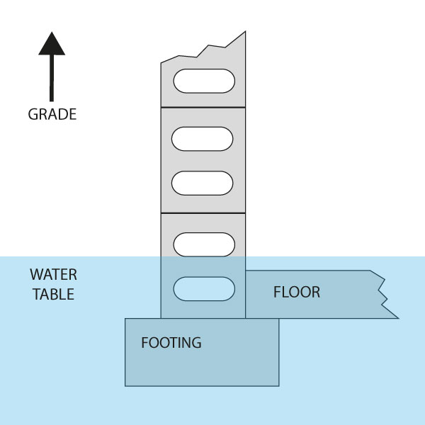

Planet Earth is 75% water, and every standing structure in the world has what is called a water table underneath it. Over years and years of rain, snow thaws, etc, the water table gets larger and larger, and recedes a littlele less each time. Eventually that water table will get so high, that it will begin pushing at the foundation of your house. Then it will recede, and this process will repeat itself until there are weak points in your home's foundation.
Hydrostatic pressure is what happens when the water table under your home rises and begins pushing against the floor and the foundation of your home. Besides the inevitable water penetration problem, hydrostatic pressure can and will eventually lead to an array of foundation issues, such as vertical and horizontal cracking, bowed foundations, chipping walls & paint, etc. With the rising water table level in your specific area, hydrostatic pressure can quickly cause the structural integrity of your home to become un-sound, and in turn yield water seepage, followed by mold growth.
The foundation of your home (the walls) sits on top of the footer, which the house is built on. The foundation and the footer contain alot of cement, so naturally, as water seeks the path of least resistance, it will begin pushing at the walls from the side of the foundation (either from the top, middle, or bottom), and this can cause immediate water seepage, and heavy cracking & deterioration, depending on what your foundation is made of.
Once water has found its way in, the problem will exponentially get worse. All it takes is that intial entry point, and this will allow more water to enter the area around your home, since pressure has been relieved, and there is now a free-flowing entry point. Unfortunately, that entry point is into your home. Water seepage typically occurs at the seam where the floor and the walls meet, but can also happen from the middle of the walls, the top of the foundation, or even from windows in the basement. Remember - once the entry point has been penetrated, it's all free flowing for Mother Nature, at that point...
As we mentioned earlier, being that water is the second strongest force on Earth (behind gravity), it is not possible to "stop" water from making its way around your house. Any one or any company that tells you otherwise, is selling a smoke-and-mirrors show. It's simply not possible, and that is just simple physics. What is possible, and NEEDS to be done, is water management. That is what we have become so good at! We do not try and stop an unstoppable force, but we rather allow the water to run its natural course, all while diverting it in the direction we want it to go, and then pump it away from your house. Stopping water is not possible - Managing water properly, is possible. It also happens to be our passion.
Putting all these snippets of info together leads us to our main responsibility to you - the consumer. What is it exactly that we are going to do to your home? We are going to install a real, fully functional, pressure relief waterproofing system. No, this is not your run-of-the-mill, average French Drain system. No, this is not your generic cookie-cutter waterproofing system that's installed from one house to the next. Can we tell you step-by-step what we're going to do at your home, on this website? Of course not! We cannot do that, because at the level of expertise at which we operate, no one house is the same. Our expertly trained technicians must first come to diagnose and evaluate the problem, and then and only then, will we provide you with the ideal solution to implement a specific pressure relief system to keep your home dry and healthy...